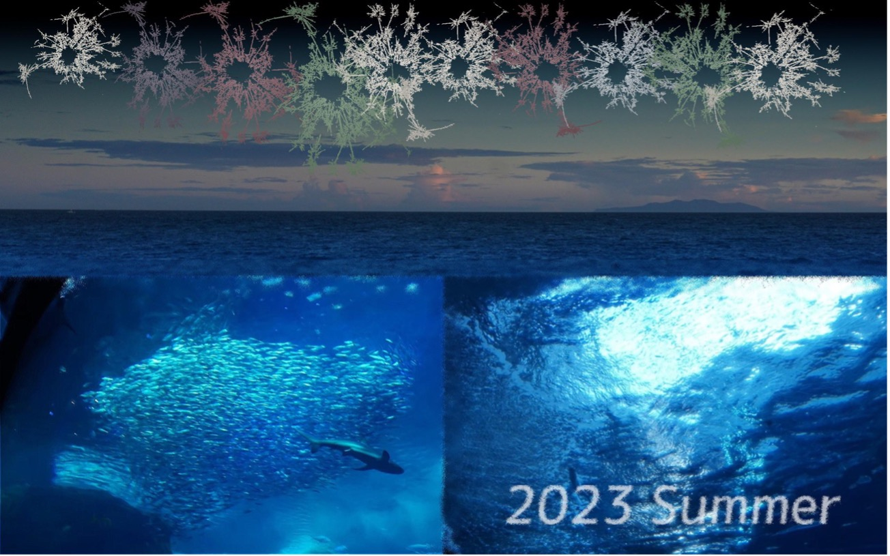

鎌倉・江ノ島で撮影した画像と、線香花火の画像をうまく合成して、鎌倉で撮影した夕方の空に花火が打ち上がる様子を表現しました。
コーディングについて
Javaを用いて、画像加工の種類ごとにクラスを作成。
工夫した点
-
花火の画像はインターネット上で欲しいものをダウンロードしてくることもできたが、自分の手元の線香花火の画像をうまく輪郭抽出して使用したこと。
ラプラシアンフィルタで輪郭抽出したのち2値化した画像に対して膨張処理を施すことで輪郭をうまく抽出できるようにした。 - グラデーション画像はグラデーション用のクラスを用いて自分で作成したものを用いたこと。
- 花火が映えるようにガンマ補正のグラデーションで画像の色合いを調整したこと。
- 完成画像を構成するメイン3枚の写真のつなぎ目が自然となるように、波状加工やグラデーション加工などを施す工夫をしたこと。